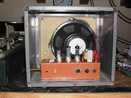

C'era una volta... in Italia una buonissima azienda.
Anzi, ce n'erano un'infinità di buonissime aziende, di quelle che oggi non sopravviverebbero alla globalizzazioe (e soprattutto alla demenziale burocrazia italiana) nemmeno un minuto: si produceva perfino elettronica di consumo (!) destinata alle famiglie.
Una di queste aziende fu la Lavorazioni Elettromeccaniche Società Anonima, universalmente conosciuta (da chi ha qualche anno in più...) come LESA, "quella dei giradischi".
Effettivamente la Lesa produsse per il mercato nostro ed estero centinaia di migliaia di giradischi, milioni di potenziometri (il dispositivo che collegato alla manopola esterna permette di variare il volume di ascolto) e altrettanti oggetti elettromeccanici.
Anche questa prestigiosa azienda (come la Geloso, la Ducati e tante altre) finì ingloriosamente la sua vita, iniziata nel 1929, nei primi anni '70 ed il materiale residuo fu disperso.
Il sottoscritto si accaparrò in quegli anni un esemplare di quel materiale dismesso, ad un prezzo irrisorio.
Si trattava di un bel piatto giradischi con cambiadischi automatico, di quelli che una volta assemblati con il relativo amplificatore avevano un prezzo di mercato non certo alla portata di un giovane e squattrinato studentello qual'ero.
Costruii attorno al piatto una cassettina di legno per sostenerlo e lo dotai di un amplificatore, naturalmente "a transistor".
Le valvole soccombevano già da una decina di anni sotto la spinta dei fratellini tripedi, e sarebbe stato in quel periodo assurdo ricorrervi; ricordo anzi che feci il preamplificatore usando addirittura un circuito integrato avveniristico, il CA3052 (oggi "obsolete product"...).
Il giradischi è rimasto poi abbandonato e dimenticato sotto due dita di polvere fino a qualche giorno fa, quando mi è venuto lo sfizio di farlo tornare a nuova vita.
Dopo una pesante (molto pesante!) seduta di pulizia, occorreva dotarlo di un adeguato amplificatore, naturalmente consono all'apparecchio e quindi a valvole; anche perchè del circuito col 3052 non ne rimane traccia da decenni... sarà stato riciclato chissà quante volte.
Per l'occasione ho voluto riprodurre uno schema classico da fonovaligia, come quelli Lesa e analoghi degli anni '60, senza nessunissimo fronzolo HiFi moderno, in modo da avere il suono assolutamente simile a quello originario.

Lo schema è semplicissimo e la parte attiva prevede solo due valvole: una 6AT6 triodo preamplificatore e una 6AQ5 tetrodo finale; per l'alimentazione ho aggiunto una 6X4 raddrizzatrice, non volendo ricorrere ai comodi diodi al silicio, che non sarebbero d'epoca.
Ero incerto se usare un raddrizzatore al selenio degli anni '60 (B250-C100), ma poi avendo spazio ho optato per la terza valvola, che fa un bel vedere col suo filamentino luminoso.
Il tutto è stato assemblato su un telaietto di alluminio di recupero ed inserito nel box di un vecchissimo altoparlante Hammarlund, questo molto più datato del girdischi stesso.

Nelle due immagini il giradischi ed il box amplificato, ancora sul tavolo "operatorio".
Come suona il buon vecchio Lesa?
Come suonavano i vecchi giradischi, nè più, nè meno.
Niente connettori dorati (sigh!), niente cavi degli altoparlanti grossi un dito, niente circuiti ultralineari... no, niente di tutto questo.
Un buon vecchio vinile e si sente come una volta.